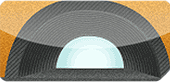
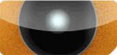
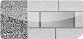
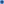
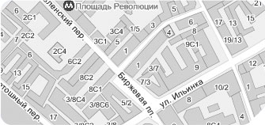

О КомпанииГруппа VConia (VConia) - имя, хорошо известное среди потребителей и организаций, работающих в отраслях гражданского и дорожного строительства. Группа компаний специализируется на производстве гофрированных труб разного диаметра из стали и пластика, а также специальных металлических конструкций, используемых для строительства переходов различного типа, мостов, тоннелей, водоотводов и т.д. Вся продукция соответствует общепринятым стандартам качества ISO 9001. Производственные мощности компании расположены в Норвегии, Швеции, Финляндии и Польше. В следующем году начнется производство сброрных гофрированных металлических конструкций в Украине. Группа VConia предлагает также широкий выбор материалов для устройства высококачественных дорожных покрытий, гражданского и экологического строительства, среди этих материалов - геотекстили, георешетки, геомембраны, габионы и т. д. В целом это позволяет предлагать комплексные инженерно-технические решения, полностью удовлетворяющие техническим требованиям заказчиков. |
НАША ПРОДУКЦИЯ:

Сборные конструкции MULTI PLATEСборные гофрированные металлические конструкции, изготавливаются из гофрированного металла толщиной 2,75-7,0 мм. Диаметром от 1,5 до 12 м.

Дренаж и канализацияДренажные системы из полимерных труб и канализационные системы из полипропилена

вся продукция
Ремонтные полимерно-цементные материалыСпециальные полимерцементные составы используются для улучшения физико-технических свойств бетона, восстановления железобетонных конструкций, изготовления сверпрочных покрытий и долговечной гидроизоляции |
КАРТА ПРОЕЗДАООО"ВСкониа Украина" |